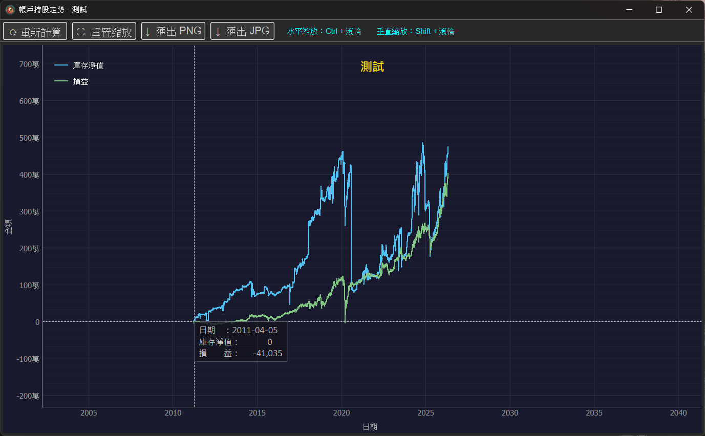
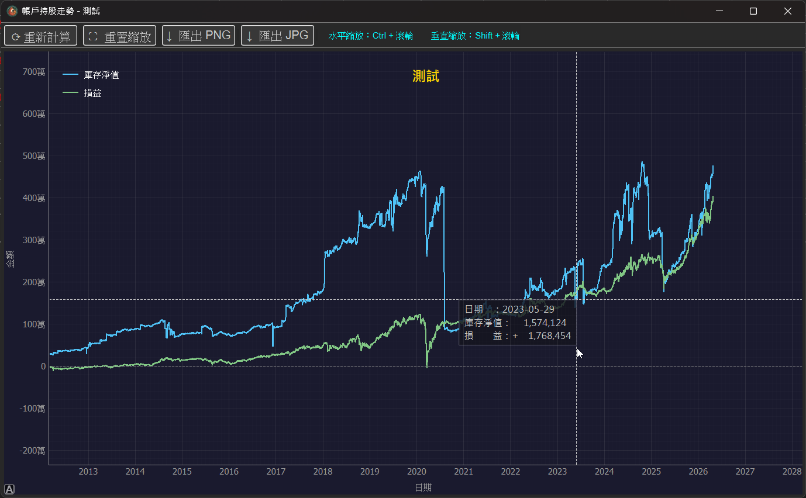

庫存損益走勢圖表
很多投資者都有一個困擾：庫存淨值看起來持續變多， 但其實分不清楚到底是本金一直投入變多， 還是真的有賺到錢。
v3.0.0 新增的庫存損益走勢圖表， 會將庫存淨值與 累計損益同時繪製在一張圖上， 讓兩者的差距與趨勢一目了然。

1、走勢圖如何解讀
圖中藍線為庫存淨值（目前持有部位的總市值）， 綠線為累計損益（已實現 + 未實現損益的總和）。
● 兩條線同步上升：代表庫存增加是來自獲利，是健康的成長。
● 藍線上升、綠線停滯：代表庫存增加主要來自新投入的本金， 並非實際獲利。
● 藍線下降、綠線下降：代表市值與累計損益同時減少， 可能是市場修正或停損出場所致。
2、查看任一日期的詳細數值
將滑鼠移動到圖表上的任一位置，會顯示該日期的庫存淨值與 損益金額，方便快速比對任意時點的狀況。

3、自由縮放
圖表支援自由縮放，操作方式如下：
● 水平縮放：按住 Ctrl + 滑鼠滾輪。
● 垂直縮放：按住 Shift + 滑鼠滾輪。
● 想恢復原始比例，按下左上角重置縮放即可。
4、匯出圖表
點擊上方的匯出 PNG或匯出 JPG， 即可將目前的走勢圖儲存為圖片檔， 可作為投資紀錄、月報整理或自我檢討的素材。